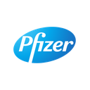

Manfredi Investment
Research & Markets
Equity Research · Informe Institucional
Datos al 3T 2026 (cierre 27 sep 2026, publicado 3 nov 2026)
Datos al 3T 2026 (cierre 27 sep 2026, publicado 3 nov 2026)

PFENYSE · Pfizer Inc.Cifras fundamentales: SEC EDGAR (10-Q del trimestre cerrado el 27 de septiembre de 2026, presentado el 3 de noviembre de 2026; 10-K del ejercicio 2025, presentado el 26 de febrero de 2026; comunicados de resultados de los 8-K del 3-nov-2026 y del 3-feb-2026; guía 2026 del 8-K del 16-dic-2025). Patentes: 10-K 2025 y archivo de datos del Orange Book de la FDA (2026-11-13). Precio de mercado: cierre del 20 de noviembre de 2026 (Yahoo Finance). Consenso: S&P Global vía stockanalysis.com, 22-nov-2026. "TTM" = últimos doce meses (4T2025 a 3T2026). "Mil millones" = billion de EE.UU. Este documento es 100% analítico — no constituye una recomendación de compra, venta ni mantenimiento. Ver disclosure completo al pie.
01 — Resumen Ejecutivo
Pfizer cerró el tercer trimestre de 2026 (trimestre cerrado el 27 de septiembre, publicado el 3 de noviembre) con ingresos de $16,583 millones, prácticamente iguales a los de un año antes (−0.4%). El número esconde dos movimientos opuestos: los productos de COVID siguieron cayendo —Paxlovid −63%, Comirnaty −30%—, mientras que el resto de la cartera creció 7% a tipo de cambio constante y los productos lanzados o comprados en los últimos años, 32%. La ganancia por acción ajustada fue de $0.87, igual que un año antes, y la GAAP de $0.56. La compañía subió la guía 2026: ingresos de $62.0-64.0 mil millones (desde $60.5-62.5) y EPS ajustado de $2.95-3.05 (desde $2.80-3.00).
El trimestre fue bueno, pero no es lo que define a Pfizer. Lo que la define es el calendario: Xeljanz ya tiene genéricos en EE.UU.; Ibrance los tendrá desde marzo de 2027, Xtandi desde agosto de 2027 y Eliquis —el producto más grande, 14.4% de las ventas— desde el 1 de abril de 2028, la fecha que fijaron los acuerdos de litigio con los genéricos. Vyndaqel ya enfrenta genéricos fuera de EE.UU. y los tendrá en EE.UU. desde el 1 de junio de 2031. En total, $22.4 mil millones de ventas de los últimos doce meses (35.2%) pierden la exclusividad en algún mercado importante antes de fin de 2030. La propia compañía calculó en diciembre de 2024 una pérdida de unos $17 mil millones de ingresos entre 2025 y 2030 por este motivo.
Este informe valúa a Pfizer con el marco de salud de la casa. La suma de partes producto por producto hasta la pérdida de exclusividad, más el pipeline ponderado por probabilidad, da $9.02 por acción: con las fechas de patente reales, curvas de erosión ancladas en lo que le pasó a la propia Pfizer con Lipitor y Lyrica, y la I+D restada una sola vez, los ingresos del modelo bajan de $62.8 mil millones en 2026 a $49.1 mil millones en 2029. Los comparables contra 13 farmacéuticas grandes, con el criterio de la casa (mediana del P/E forward aplicada al EPS 2027), dan $43.33; la reversión al propio múltiplo de Pfizer en la ventana posterior a la COVID, $25.05; y el consenso de 28 analistas, $30.22. El blend queda en $28.51, 4.1% por encima del cierre de $27.40.
La postura es neutral: el blend queda casi en el precio, pero los métodos que lo forman no coinciden. El dividendo de $1.72 por acción está cubierto 1.20 veces por el flujo de caja libre de los últimos doce meses y representa 56% del EPS ajustado; el balance soporta 2.05 veces de deuda neta sobre EBITDA. Los comparables empujan hacia arriba, porque aplican el múltiplo de un sector con patentes más largas a un EPS que el consenso ya ve en baja para 2027 (−3.2%); la suma de partes empuja hacia abajo. Si los comparables se limitaran a los pares que también atraviesan un precipicio de patentes, el blend sería de $24.60 (−10.2%). El caso a favor es el precio: después de caer 54% desde el pico de 2021, la acción cotiza a menos de diez veces lo que Pfizer gana. El caso en contra es la suma de partes: lo que Pfizer ya tiene, más su pipeline ponderado, no alcanza a explicar el precio.
02 — Historia y Evolución
Charles Pfizer y Charles Erhart fundaron la compañía en Brooklyn en 1849 como fabricante de productos químicos finos. El salto a la farmacéutica moderna llegó con la producción masiva de penicilina durante la Segunda Guerra Mundial y, en las décadas siguientes, con una sucesión de éxitos de molécula pequeña: Feldene, Zoloft, Norvasc, Viagra y, sobre todo, Lipitor, el medicamento más vendido de la historia antes de la era de los biológicos. Pfizer creció comprando: Warner-Lambert (2000, para quedarse con Lipitor), Pharmacia (2003), Wyeth (2009, por unos $68 mil millones, que le trajo Prevnar y Enbrel) y Hospira (2015). La compra de Wyeth coincidió con el primer gran precipicio de patentes, el de Lipitor a fines de 2011, y obligó a recortar el dividendo a la mitad en 2009.
La década de 2010 fue de achique: Pfizer escindió Zoetis (salud animal, 2013), vendió la división de nutrición, juntó sus productos de consumo con los de GSK (2019) y separó su negocio de medicamentos sin patente, Upjohn, que en noviembre de 2020 se fusionó con Mylan para formar Viatris. La Pfizer que quedó era más chica y más concentrada en productos innovadores: unos $42 mil millones de ingresos en 2020. Ese año, la alianza con BioNTech produjo la primera vacuna de ARN mensajero contra la COVID-19 aprobada en el mundo (Comirnaty), y en 2021 llegó Paxlovid, el antiviral oral. Los ingresos se dispararon a $100.3 mil millones en 2022, con 57% proveniente de esos dos productos.
Lo que siguió fue la resaca. Las ventas de COVID cayeron de $56.7 mil millones en 2022 a $4.45 mil millones en los últimos doce meses (92% menos), y en 2023 la compañía tuvo que revertir ingresos de Paxlovid devueltos por el gobierno de EE.UU. Pfizer usó la caja de la pandemia para comprar: Arena, Biohaven (Nurtec), Global Blood Therapeutics (Oxbryta, retirado del mercado en 2024) y, sobre todo, Seagen, cerrada en diciembre de 2023 por $44.2 mil millones, la apuesta a los conjugados anticuerpo-fármaco (ADC) en oncología. En noviembre de 2025, después de una disputa con Novo Nordisk, compró Metsera para entrar en obesidad. La acción, que llegó a $59.05 a fines de 2021, cotiza a $27.40.
Ingresos anuales de Pfizer separados en productos de COVID (Comirnaty y Paxlovid) y resto de la cartera, en miles de millones de US$, 2020-2025 y últimos doce meses a septiembre 2026. Fuente: comunicados de resultados del cuarto trimestre de cada año (cifras reexpresadas tomadas del comunicado siguiente cuando corresponde). Sin COVID, la cartera creció 43% entre 2020 y el TTM, en buena parte por compras.
03 — Modelo de Negocio, Productos y Patentes
Pfizer descubre, desarrolla, fabrica y vende medicamentos y vacunas de marca. Desde 2026 reporta un solo segmento (Biopharma) organizado en cuatro carteras: atención primaria (Eliquis, la familia Prevnar, Nurtec, Abrysvo, Comirnaty y Paxlovid), oncología (Ibrance, Padcev, Xtandi, Lorbrena, Inlyta, Adcetris, Tukysa y los ADC de Seagen), especialidades (la familia Vyndaqel para la amiloidosis cardíaca, Xeljanz, Cibinqo, enfermedades raras) y hospital y biosimilares, a la que se suma Pfizer CentreOne, su negocio de fabricación para terceros. EE.UU. explicó 61.2% de los ingresos de los nueve meses de 2026. El margen bruto ajustado del trimestre fue de 76.8%, alto aunque por debajo del de Lilly, porque Pfizer vende vacunas, inyectables hospitalarios y biosimilares de menor margen, y porque comparte las ganancias de Eliquis con Bristol-Myers Squibb (BMS) y las de Xtandi con Astellas.
Ingresos por producto, últimos doce meses a septiembre 2026 (miles de millones de US$), calculados como año 2025 + nueve meses 2026 − nueve meses 2025 con las tablas de ingresos de los comunicados. En rojo, los productos que pierden la exclusividad en EE.UU. antes de fin de 2030. El resto de la cartera (biosimilares no oncológicos, inyectables hospitalarios, productos maduros y CentreOne) suma $17.8 mil millones.
La tabla siguiente es el centro del caso. Reúne cada producto que pierde la exclusividad en algún mercado importante antes de fin de 2030, con su fecha en EE.UU. según el 10-K, el Orange Book de la FDA y los acuerdos de litigio informados en el 10-Q, y su exposición al programa de negociación de precios de Medicare creado por la Ley de Reducción de la Inflación (IRA).
| Producto | Ventas TTM | % del total | Tipo | LOE EE.UU. | LOE Europa | IRA (Medicare) |
|---|---|---|---|---|---|---|
| Eliquis (apixabán) | $9.13B | 14.4% | Molécula pequeña | 1-abr-2028 (acuerdos) | 2026 | Precio negociado desde 2026 (−56% sobre lista) |
| Vyndaqel / Vyndamax (tafamidis) | $6.82B | 10.7% | Molécula pequeña | 1-jun-2031 (acuerdos) | 2026 | Elegible; no seleccionado aún |
| Ibrance (palbociclib) | $4.19B | 6.6% | Molécula pequeña | mar-2027 | 2028 | Precio negociado desde 2027 (−50%) |
| Xtandi (enzalutamida) | $2.11B | 3.3% | Molécula pequeña | ago-2027 | Astellas | Precio negociado desde 2027 (−48%) |
| Xeljanz (tofacitinib) | $0.97B | 1.5% | Molécula pequeña | jun-2026 | 2028 | Ronda 2028 (precio no publicado al corte) |
| Inlyta (axitinib) | $0.90B | 1.4% | Molécula pequeña | dic-2030 (Orange Book) | n.d. | — |
| Adcetris (brentuximab vedotin) | $0.84B | 1.3% | Biológico (ADC) | 2026 | Takeda | — |
| Braftovi / Mektovi | $0.84B | 1.3% | Molécula pequeña | 2030 / 2026 | Pierre Fabre | — |
| Bosulif (bosutinib) | $0.47B | 0.7% | Molécula pequeña | nov-2026 | n.d. | — |
| Talzenna (talazoparib) | $0.21B | 0.3% | Molécula pequeña | 2029 | 2034 | — |
| Ventas en riesgo hasta fin de 2030 ("revenue gap") | $22.42B | 35.2% | Vyndaqel cuenta solo fuera de EE.UU. ($2.76B); con Vyndaqel EE.UU. (jun-2031): $26.49B, 41.6% | |||
Fuente: 10-K 2025 de Pfizer, "Patents and Other Intellectual Property Rights" (año de vencimiento de la patente básica, incluidas extensiones) y notas 5 y 8 de esa tabla; 10-Q del 3T2026, nota 16A1 (acuerdos de Vyndamax: genéricos permitidos desde el 1-jun-2031, sujeto al juicio con Apotex); FDA Orange Book, archivo de datos al 2026-11-13 (Eliquis: compuesto 21-nov-2026, formulación 2031-02-24; Ibrance: sustancia 5-mar-2027; Xtandi: 13-ago-2027; Xeljanz: compuesto dic-2025 más exclusividad pediátrica a jun-2026; Inlyta: patente de sustancia a dic-2030 —el 10-K 2025 ya no lo incluye entre las patentes más significativas—); CMS, precios negociados de Medicare (Eliquis desde 2026, Ibrance y Xtandi desde 2027; Xeljanz seleccionado para 2028, con precio a publicarse a más tardar el 30-nov-2026, sin publicar al corte del 20-nov). Descuentos del IRA sobre precio de lista, no sobre precio neto. Xtandi: Pfizer comparte el resultado en EE.UU. con Astellas. Eliquis: alianza con BMS.
Ventas TTM (miles de millones de US$) que pierden la exclusividad, ordenadas por fecha de pérdida de exclusividad. En rojo, lo que vence en EE.UU. antes de fin de 2028; en dorado, fuera de EE.UU. y los productos chicos; en azul oscuro, Vyndaqel en EE.UU., que vence a mediados de 2031.
Tres detalles de la tabla importan para la valuación. Primero, Eliquis es una molécula pequeña: cuando entran los genéricos, la caída es rápida. La propia Pfizer lo vivió con Lipitor, cuyas ventas en EE.UU. cayeron 93% un año después de la entrada del genérico (4T2012 contra 4T2011), y con Lyrica, que perdió 91% en EE.UU. en el segundo trimestre después de su pérdida de exclusividad. Segundo, la fecha de Eliquis puede adelantarse: el 10-K advierte que si la patente de formulación de 2031 fuera invalidada, los genéricos con acuerdo podrían lanzar desde el 21 de noviembre de 2026. Tercero, Vyndaqel tiene dos relojes: en Europa la patente venció en 2026 (Teva litiga contra la EMA para lanzar su genérico) y en EE.UU. los acuerdos fijaron junio de 2031, pero queda un juicio abierto con Apotex y otro con Zenara por una versión en tabletas.
04 — Desarrollos Recientes y Perspectiva
Eliquis antes del precipicio. El anticoagulante facturó $2,523 millones en el trimestre, 25% más que un año antes (40% en EE.UU.). Paradójicamente, el primer año con precio negociado de Medicare (56% de descuento sobre el precio de lista desde enero de 2026) vino acompañado de un precio neto más alto en EE.UU., por menores descuentos a los pagadores y una mejor mezcla de canales, según el comunicado. Es un viento a favor que no va a durar: desde abril de 2028, los genéricos.
Seagen y los lanzamientos. Padcev, el ADC para cáncer de vejiga que vino con Seagen, facturó $720 millones (+55%), impulsado por la primera línea de la enfermedad metastásica y por la aprobación en julio de 2026 para el cáncer de vejiga músculo-invasivo, antes y después de la cirugía. La familia Vyndaqel creció 11% (a $1,773 millones), Nurtec 33% y Lorbrena 44%. Seagen aportó en los últimos doce meses $3.15 mil millones de ventas en Padcev, Tukysa y Tivdak, más Adcetris, que pierde su patente en EE.UU. en 2026. Cuando anunció la compra, en marzo de 2023, Pfizer dijo que Seagen podría aportar más de $10 mil millones de ingresos ajustados por riesgo en 2030; el caso Base de este informe, sin el pipeline, llega a $5.1 mil millones con los productos ya aprobados.
Lo que pierde. Paxlovid cayó 63% y Comirnaty 30%, por menos contagios y por la recomendación más estrecha de la vacuna en EE.UU. La familia Prevnar cayó 10%: menor vacunación de adultos y niños en EE.UU. y pérdida de participación en adultos frente a Capvaxive, la vacuna de Merck. Xeljanz cayó 49% en EE.UU. y Bosulif 53%, los dos con genéricos. La guía 2026 incluye unos $1.1 mil millones de impacto negativo por pérdidas de exclusividad.
Metsera y la obesidad. Pfizer cerró la compra de Metsera el 13 de noviembre de 2025 por $65.60 por acción en efectivo más un derecho de valor contingente (CVR) de hasta $20.65 por acción (hasta $2.3 mil millones) atado a tres hitos: el inicio de la fase 3 de la combinación MET-097i + MET-233i ($4.60), la aprobación de la FDA del MET-097i mensual ($6.40) y la de la combinación ($9.65). El valor razonable total pagado fue de $8.0 mil millones, de los que $7.9 mil millones se registraron como investigación y desarrollo en proceso. El activo principal, berobenatide (MET-097i), un agonista del GLP-1 de aplicación mensual, está en fase 3; la combinación con el análogo de amilina, en fase 2. En febrero de 2026 Pfizer sumó los derechos en China del GLP-1 ecnoglutide (Sciwind). La compañía espera $600 millones anuales de sinergias de costos por Metsera a fines de 2026.
El resto del pipeline. En el trimestre, Elrexfio (mieloma múltiple) cumplió su objetivo primario en el ensayo de fase 3 MagnetisMM-32, Litfulo mostró resultados positivos de fase 3 en vitiligo y ya se presentó en Europa, la FDA aprobó Talzenna con Xtandi en cáncer de próstata sensible a hormonas con mutaciones de reparación del ADN y Tukysa en mantenimiento de primera línea del cáncer de mama HER2+, y la EMA validó la solicitud de la vacuna contra la enfermedad de Lyme (con Valneva). En el lado negativo, el ADC sigvotatug vedotin fracasó en segunda línea de cáncer de pulmón (junio de 2026, con un deterioro de $3,800 millones) y Pfizer retiró definitivamente Oxbryta. En el tercer trimestre pagó $650 millones a Innovent por una licencia, que absorbe unos $0.10 de EPS ajustado de 2026.
Precios y aranceles. Pfizer fue la primera farmacéutica en firmar, el 30 de septiembre de 2025, un acuerdo voluntario con el gobierno de EE.UU.: precios de "nación más favorecida" en Medicaid, precios alineados con otros países desarrollados en los lanzamientos, venta directa con descuento por TrumpRx y una inversión de $70 mil millones en I+D y plantas en EE.UU., a cambio de un período de gracia de tres años frente a los aranceles de la sección 232 sobre medicamentos patentados (100% general desde el 31 de julio de 2026 para las compañías del anexo). Según el research común de esta cobertura, ese acuerdo la encuadraría en la tasa cero hasta enero de 2029; no se pudo verificar contra el anexo oficial y se trata como supuesto.
05 — Estados Financieros
| US$ millones | 3T2026 | 3T2025 | Var. | TTM |
|---|---|---|---|---|
| Ingresos | 16,583 | 16,654 | −0.4% | 63,624 |
| Costo de ventas (sin amortización) | 4,028 | 4,172 | −3.5% | 16,940 |
| Margen bruto (GAAP) | 75.7% | 74.9% | — | 73.4% |
| Ventas, información y administración (SI&A) | 3,279 | 3,186 | +2.9% | 13,813 |
| Investigación y desarrollo | 3,016 | 2,546 | +18.5% | 11,521 |
| IPR&D adquirida | 669 | 1,390 | n.s. | 1,034 |
| Amortización de intangibles | 1,128 | 1,223 | n.s. | 4,727 |
| Utilidad neta GAAP | 3,242 | 3,541 | −8.4% | 4,033 |
| EPS diluido GAAP | $0.56 | $0.62 | — | $0.70 |
| EPS ajustado | $0.87 | $0.87 | 0.0% | $3.05 |
Fuente: comunicado de resultados del 3T2026 (8-K del 3-nov-2026) y comunicado del 4T2025 (8-K del 3-feb-2026). TTM = año 2025 − nueve meses 2025 + nueve meses 2026. EPS ajustado trimestral: $0.66 (4T25), $0.75 (1T26), $0.77 (2T26), $0.87 (3T26). Pfizer incluye la IPR&D adquirida dentro de su resultado ajustado.
En los últimos doce meses Pfizer ganó $4,033 millones según las normas contables (GAAP), y $17,501 millones según su medida ajustada. La diferencia no es un truco contable sino la suma de hechos concretos, que la tabla siguiente separa. El más grande es el de los deterioros: $8,688 millones, sobre todo por el fracaso de sigvotatug vedotin en segunda línea de pulmón ($3,800 millones, un activo de Seagen) y por Oxbryta. Le sigue la amortización de los intangibles de las compras (Seagen, Biohaven, Arena, Metsera): Pfizer la excluye del resultado ajustado, y este informe también, porque el Método 1 valúa esos productos directamente.
| Puente GAAP → ajustado, TTM (US$ millones) | Importe |
|---|---|
| Utilidad neta GAAP | 4,033 |
| + Amortización de intangibles | 4,727 |
| + Partidas de compras (integración, inventario revaluado, contraprestación contingente) | 2,008 |
| + Reestructuración e implementación de los programas de costos | 2,115 |
| + Deterioros de activos (sigvotatug, Oxbryta, otros) | 8,688 |
| + Pérdidas en acciones y ajustes actuariales de pensiones | 94 / −275 |
| + Otros (venta de ViiV, litigios, operaciones discontinuadas) | −517 / −16 |
| − Efecto impositivo de los ajustes | −3,355 |
| Resultado ajustado | 17,501 |
Fuente: conciliaciones GAAP–ajustado de los comunicados del 4T2025 (año completo) y del 3T2026 (nueve meses de 2025 y de 2026). TTM = año 2025 − 9M25 + 9M26 para cada partida. La suma de partidas difiere del resultado ajustado en −1 millones por redondeo de la compañía. "Otros" es neto: incluye la ganancia de $1,870 millones por la venta de la participación en ViiV (que resta) y cargos por litigios.
Dos lecturas operativas. Primero, el margen bruto subió a 75.7% por mezcla y tipo de cambio, y la I+D creció 18% por la inversión en oncología y obesidad (la guía de I+D ajustada subió a $10.8-11.8 mil millones); SI&A creció apenas 2.9% a pesar de la inflación de salarios, por el programa de recorte de costos. Segundo, el margen operativo ajustado de los últimos doce meses —ingresos menos costo, SI&A, I+D e IPR&D ajustados— es de 34.3%. Con la tasa impositiva ajustada subiendo de 11% en 2025 a 15% en 2026 (fin de beneficios fiscales puntuales), el EPS ajustado no crece aunque el negocio operativo mejore.
Margen bruto GAAP trimestral (ingresos menos costo de ventas sin amortización, sobre ingresos), en %, 1T2025 a 3T2026. Los trimestres de 2025 se obtienen de los datos acumulados de los comunicados. El cuarto trimestre de 2025 fue el de menor margen del período.
Recorte de costos. El programa de realineación de costos lleva $5.1 mil millones de ahorros netos logrados hasta 2025 y apunta a $6.7 mil millones hasta 2029, después de sumar en el tercer trimestre $1.0 mil millones adicionales en SI&A para 2027-2029. El programa de optimización de manufactura apunta a $3.0 mil millones hasta 2029 ($1.3 mil millones a fines de 2026). Entre los dos, quedan unos $2.7 mil millones por capturar después de 2026; la Sección 13 traslada aproximadamente la mitad de ese ahorro al margen de contribución de 2030, porque la otra mitad se va a compensar la pérdida de productos de alto margen como Eliquis.
06 — Balance, Deuda y Capacidad de Compra
| US$ millones | 27-sep-2026 | 31-dic-2025 | 31-dic-2024 |
|---|---|---|---|
| Caja y equivalentes | 1,824 | 1,142 | 1,043 |
| Inversiones de corto plazo | 12,448 | 12,454 | 19,434 |
| Deuda de corto plazo (incluye porción corriente) | 2,674 | 3,154 | 6,946 |
| Deuda de largo plazo | 59,997 | 61,641 | 57,405 |
| Deuda neta | 48,399 | 51,199 | 43,874 |
| Goodwill | 71,464 | 71,264 | 68,527 |
| Intangibles identificables | 45,956 | 53,731 | 55,411 |
| Patrimonio neto de Pfizer | 89,001 | 86,476 | 88,203 |
| Activos totales | 204,544 | 208,160 | 213,396 |
Fuente: balance del 10-Q del 3T2026 y del 10-K 2025. Deuda neta = deuda de corto plazo + deuda de largo plazo − caja − inversiones de corto plazo (Pfizer mantiene su liquidez en inversiones de corto plazo; las de largo plazo no se restan). Las dos líneas de deuda no se superponen: la de largo plazo es solo la porción no corriente.
La compra de Seagen se financió con $31 mil millones de bonos emitidos en mayo de 2023, y desde entonces Pfizer viene desapalancándose: la deuda neta es de $48.4 mil millones, contra un EBITDA ajustado aproximado de $23.6 mil millones en los últimos doce meses (utilidad operativa ajustada + depreciación; estimación propia), es decir 2.05 veces. En los nueve meses de 2026 la deuda neta bajó $2.8 mil millones: el flujo de caja cubrió el dividendo y se sumaron $1,875 millones por la venta de la participación en ViiV, sin emisiones de deuda. Los bonos de Pfizer tienen calificación A2 (Moody's) y A (S&P), y el papel comercial, P-1 y A-1. Los vencimientos son manejables: $17.1 mil millones entre 2027 y 2030 ($5.7 mil millones en 2028 y $6.2 mil millones en 2030), contra un flujo operativo anual de más de $14 mil millones.
Capacidad de compra ("firepower"). En pharma, comprar es la forma principal de tapar un precipicio de patentes. Si Pfizer llevara la deuda neta hasta 3.0 veces el EBITDA —el nivel al que suelen llegar las farmacéuticas grandes después de una compra importante sin perder la calificación A—, tendría unos $22.4 mil millones adicionales. Es una estimación propia y aproximada. Alcanza para varias compras del tamaño de Metsera ($8.0 mil millones), no para otra Seagen ($44.2 mil millones), salvo que se use la acción o se recorte el dividendo. La compañía dice que va a seguir desapalancándose y que las recompras de acciones recién volverían después de eso (quedan $3.3 mil millones autorizados, sin uso en 2026).
07 — Flujo de Caja, Dividendo y Asignación de Capital
| US$ millones | 2023 | 2024 | 2025 | TTM |
|---|---|---|---|---|
| Flujo operativo (OCF) | 8,700 | 12,744 | 11,704 | 14,173 |
| Inversión en plantas y equipos (capex) | 3,907 | 2,909 | 2,629 | 2,387 |
| Flujo de caja libre (FCF) | 4,793 | 9,835 | 9,075 | 11,786 |
| Dividendos pagados | 9,247 | 9,512 | 9,771 | 9,792 |
| FCF / dividendos | 0.52x | 1.03x | 0.93x | 1.20x |
Fuente: estados de flujo de efectivo del 10-K 2025 y del 10-Q del 3T2026. TTM = año 2025 − nueve meses 2025 + nueve meses 2026. Las compras de compañías (Metsera: $6,927 millones netos de caja en 2025; Seagen: $43,430 millones en 2023) se registran en actividades de inversión y no están restadas en el FCF.
Flujo operativo, flujo de caja libre y dividendos pagados (miles de millones de US$), 2021-2025 y TTM a septiembre 2026. Fuente: SEC EDGAR (10-K y 10-Q). Los valores exactos de 2023 en adelante están en la tabla de arriba.
¿Es sostenible el dividendo? Pfizer paga $0.43 por trimestre ($1.72 por año), un rendimiento de 6.28% al cierre del 20-nov-2026, 1.37 puntos por encima del bono del Tesoro a 10 años (4.91%). Se puede medir de tres maneras. Contra el EPS ajustado de los últimos doce meses ($3.05), el dividendo es 56%: holgado. Contra el flujo de caja libre, es 83%: el FCF de $11.8 mil millones cubre los $9.8 mil millones pagados 1.20 veces, pero en 2023 y 2025 no alcanzó y la diferencia se cubrió con caja y deuda. Contra el EPS GAAP ($0.70), el dividendo es 246%, un número distorsionado por los deterioros. La historia también cuenta: Pfizer subió el dividendo todos los años entre 2010 y 2024 (de $1.22 por acción declarados en 2016 a $1.72 en 2025, 3.9% anual), pero en diciembre de 2025 lo mantuvo en $0.43 por trimestre: la primera vez sin aumento desde 2009, el año en que lo recortó a la mitad para comprar Wyeth.
La conclusión de este informe: el dividendo es sostenible mientras Eliquis siga vendiendo, es decir, al menos hasta 2027. Entre 2026 y 2029 el modelo de la Sección 13 lleva los ingresos de $62.8 a $49.1 mil millones, y el margen de FCF de 2030 del caso Base es de 18.6% sobre ingresos de $50.4 mil millones: un FCF de alrededor de $9.3 mil millones contra los $9.8 mil millones de dividendos de los últimos doce meses. Para sostenerlo sin deuda, Pfizer necesita que el pipeline y los programas de costos rindan, o congelar el dividendo varios años, que es lo que ya empezó a hacer. Un recorte no es el caso Base, pero tampoco es un escenario remoto.
Asignación de capital. En los nueve meses de 2026 Pfizer invirtió $8.3 mil millones en I+D interna, unos $850 millones en licencias (sobre todo Innovent) y pagó $7.3 mil millones de dividendos; no recompró acciones. En los últimos tres años, las compras grandes fueron Seagen ($44.2 mil millones, 2023), Metsera ($8.0 mil millones, 2025) y las licencias de 3SBio ($1.25 mil millones por adelantado, 2025) e Innovent ($650 millones, 2026). Del otro lado, vendió su participación en Haleon y, en marzo de 2026, la de ViiV ($1,875 millones).
08 — Comparables de Industria
| Compañía | P/E forward | EV/EBITDA | Rend. dividendo | Deuda / EBITDA |
|---|---|---|---|---|
| Pfizer (PFE) | 9.69x | 8.23x | 6.28% | 2.45x |
| LLY | 28.70x | 26.75x | 0.51% | 1.06x |
| JNJ | 24.27x | 19.67x | 1.98% | 1.29x |
| MRK | 15.91x | 12.68x | 2.63% | 1.80x |
| BMY | 9.12x | 8.33x | 4.29% | 2.41x |
| AMGN | 17.99x | 15.68x | 2.31% | 3.02x |
| GILD | 19.95x | 15.33x | 1.97% | 1.77x |
| NVO | 11.66x | 6.68x | 3.39% | 0.73x |
| AZN | 15.76x | 14.02x | 1.85% | 1.58x |
| NVS | 15.77x | 13.59x | 2.05% | 1.98x |
| GSK | 10.08x | 8.10x | 3.78% | 2.03x |
| SNY | 9.43x | 7.59x | 5.20% | 1.32x |
| REGN | 11.39x | 13.50x | 0.41% | 0.48x |
| VRTX | 27.30x | 24.94x | 0.00% | 1.20x |
Fuente: stockanalysis.com (/statistics), 22-nov-2026, con cierres del 20-nov-2026 (research común de defensivos). Los 13 pares son el set obligatorio de la cobertura de salud, sin Pfizer ni AbbVie (regla anti-circularidad); AbbVie cotiza a 18.15x y se muestra solo como referencia. Deuda/EBITDA de Pfizer según la misma fuente (la estimación propia de la Sección 06, deuda neta sobre EBITDA ajustado, da 2.05x). VRTX no paga dividendo.
P/E forward de Pfizer y de los 13 pares del set de la cobertura, 22-nov-2026. Fuente: stockanalysis.com.
Pfizer cotiza a 9.7x su ganancia de los próximos doce meses, 39% por debajo de la mediana de los 13 pares (15.77x, NVS), contra 18.8x del sector salud del S&P 500 y 16.5x del índice. Solo Bristol-Myers Squibb (9.12x) y Sanofi (9.43x) son más baratas, y no por casualidad: Bristol-Myers es la socia de Pfizer en Eliquis y enfrenta el mismo precipicio, más el de Opdivo. Sanofi y los que siguen en la lista —GSK, Regeneron y Novo Nordisk— también tienen productos grandes que vencen o que ya enfrentan genéricos o biosimilares. Las caras —Lilly, Vertex, J&J— son las que tienen sus franquicias protegidas por más años. En pharma, el mercado paga duración de patentes.
El cuadro siguiente compara a Pfizer con las otras tres farmacéuticas valuadas con el marco de salud de la casa. Lo arma el modelo: las cifras de Pfizer y de AbbVie salen de sus modelos; las de Lilly y J&J, de los informes del tercer trimestre publicados el 13 de noviembre, sin tocar sus fair values, con solo lo que depende del precio recalculado al cierre del 20 de noviembre.
| Métrica | PFE | ABBV | LLY | JNJ |
|---|---|---|---|---|
| Precio (cierre 20-nov-2026) | $27.40 | $286.20 | $1,347.11 | $270.47 |
| Fair value (blend) | $28.51 | $241.49 | $1,089.85 | $205.56 |
| Distancia al precio | +4.1% | −15.6% | −19.1% | −24.0% |
| M1 · suma de partes + rNPV | $9.02 | $106.53 | $481.04 | $85.94 |
| M2 · comparables | $43.33 | $237.89 | $878.49 | $200.91 |
| M3 · reversión histórica | $25.05 | $248.78 | $1,197.89 | $201.36 |
| M4 · consenso | $30.22 | $315.88 | $1,515.22 | $287.88 |
| Promedio independientes (M1, M2) | $30.46 | $188.63 | $729.45 | $157.80 |
| Promedio anclados (M3, M4) | $27.20 | $276.74 | $1,330.11 | $237.41 |
| P/E sobre EPS 2027E | 9.3x | 17.6x | 26.5x | 23.3x |
| Rendimiento del dividendo | 6.3% | 2.5% | 0.5% | 2.0% |
| Dividendos / FCF | 83.1% | 64.3% | 30.4% | 61.8% |
| Deuda neta / EBITDA | 2.1x | 2.3x | 1.2x | 0.9x |
| I+D / ventas (TTM) | 18.1% | 15.1% | 17.8% | 16.2% |
| Margen bruto (3T26) | 75.7% | 75.4% | 83.9% | 68.1% |
| Ventas en riesgo de LOE | 35.2% | 22.6% | 21.0% | 47.5% |
| Crecimiento EPS 2027E | −3.2% | +16.0% | +43.4% | +4.4% |
| Tasa de descuento del M1 | 7.1% | 7.1% | 7.9% | 7.5% |
| Postura | Neutral | Neutral, con sesgo bajista | Neutral, con sesgo bajista | Neutral, con sesgo bajista |
Lilly y J&J se publicaron con una tasa libre de riesgo de 5.103% (cierre del 12-nov-2026; precios de publicación $1,427.28 y $283.52) y sus tasas de descuento son las propias; Pfizer y AbbVie usan la tasa común de la cobertura de pharma calculada con el cierre del 20-nov (rendimiento del Treasury de 4.912%). La "distancia al precio" de Lilly y J&J compara el fair value publicado con el cierre del 20-nov. Ventas en riesgo de LOE: Pfizer y AbbVie, ventas TTM que pierden la exclusividad hasta fin de 2030; Lilly y J&J, la medida publicada en sus informes (horizonte de cada informe). Dividendos/FCF de Lilly y J&J no figuran en el research común ("n.d."). M3 y M4 de Lilly y J&J son los publicados.
09 — Gobierno Corporativo y Estructura Accionaria
Fuente: SEC DEF 14A de Pfizer (proxy 2026, presentado el 12-mar-2026); 8-K del 3-nov-2026 (nombramiento de la CFO); comunicado y 10-Q del 3T2026.
La estructura es la de una gran compañía estadounidense sin accionista de control: una sola clase de acciones y directores y ejecutivos con menos de 1% del capital. Bourla combina presidencia del directorio y dirección ejecutiva, una práctica que los asesores de voto suelen objetar. El cambio de directora financiera, en pleno precipicio, no altera la estrategia declarada: desapalancar, sostener el dividendo y comprar pipeline. El riesgo de gobierno más relevante es otro: la relación con el gobierno de EE.UU. (el acuerdo de precios, el IRA, los aranceles) y los litigios de producto, que en los nueve meses de 2026 sumaron unos $1,000 millones de cargos legales.
10 — Registro de Riesgos
| Riesgo | Descripción y dato de respaldo | Impacto |
|---|---|---|
| Precipicio de patentes | $22.4 mil millones (35% de las ventas TTM) pierden la exclusividad antes de fin de 2030; Eliquis solo es 14%. Una invalidación de la patente de formulación adelantaría los genéricos de Eliquis a noviembre de 2026. | Alto |
| Fracaso del reemplazo | El pipeline que tiene que compensar el precipicio está mayormente en fase 3 o antes (obesidad, PD-1 x VEGF, atirmociclib). El fracaso de sigvotatug en 2026 costó $3,800 millones de deterioro. | Alto |
| Dividendo | FCF/dividendos de 1.20x en los últimos doce meses y por debajo de 1 en 2023 y 2025; el modelo Base deja el FCF de 2030 por debajo del dividendo actual. | Medio-alto |
| Obesidad | Metsera llega tarde a un mercado con Lilly y Novo ya establecidas, pastillas aprobadas y precios en baja; el CVR agrega hasta $2.3 mil millones de pagos si los hitos se cumplen. | Medio-alto |
| Política de precios en EE.UU. | IRA (Eliquis 2026, Ibrance y Xtandi 2027, Xeljanz 2028; Vyndamax elegible para una ronda próxima), acuerdo de nación más favorecida, reforma de PBMs. | Medio |
| Vacunas | Prevnar cayó 10% en el 3T por menor vacunación y competencia (Capvaxive, de Merck); Comirnaty depende de recomendaciones oficiales más estrechas. | Medio |
| Vyndaqel | Genéricos en Europa desde 2026; en EE.UU., juicios abiertos con Apotex y Zenara que podrían adelantar la fecha de junio de 2031. | Medio |
| Aranceles (sección 232) | Tasa cero condicionada al acuerdo con el gobierno y a las inversiones en EE.UU.; no verificada contra el anexo oficial. | Bajo-medio |
| Litigios de producto | Cargos legales de unos $1,000 millones en los nueve meses de 2026. | Bajo-medio |
El escenario Bear de la Sección 13 junta los primeros riesgos: genéricos de Eliquis a mediados de 2027, genéricos de Vyndamax en EE.UU. en 2029, un precio negociado de Medicare más duro para Vyndamax, picos del pipeline 40% más bajos y márgenes que no capturan el recorte de costos. Con esos supuestos, los ingresos de 2030 caen a $39.9 mil millones.
11 — Catalizadores
| Evento | Fecha esperada | Por qué importa |
|---|---|---|
| Precio negociado de Medicare para Xeljanz (ronda 2028) | CMS lo publica a más tardar el 30-nov-2026 | Primer dato de la tercera ronda; Xeljanz ya tiene genéricos en EE.UU. |
| Guía 2027 | Mediados de diciembre (la de 2026 se dio el 16-dic-2025) | Primer número oficial del año en que vencen Ibrance y Xtandi; consenso de EPS $2.95 e ingresos de $60.8 mil millones. |
| Genéricos de Ibrance y Xtandi en EE.UU. | Mar-2027 y ago-2027 | Primera medición real de la velocidad de erosión del precipicio. |
| Fase 3 de la obesidad (berobenatide) e inicio de fase 3 de la combinación con amilina | 2027-2028 (estimación propia) | El inicio de la fase 3 de la combinación dispara el primer pago del CVR de Metsera ($4.60 por acción). |
| Presentación de Elrexfio (MM-32) y decisiones de la EMA (Lyme, Litfulo en vitiligo) | 2027 (estimación propia) | Lanzamientos con alta probabilidad que suman ventas antes del vencimiento de Eliquis. |
| Datos de PF-08634404 (PD-1 x VEGF) | 2027 en adelante | El activo de mayor pico potencial de la cartera de oncología y el de mayor incertidumbre. |
| Litigios de Vyndamax (Apotex, Zenara) y de Eliquis | En curso | Cualquier fallo adverso adelanta la pérdida de exclusividad de los dos productos más grandes. |
| Genéricos de Eliquis en EE.UU. | 1-abr-2028 (acuerdos) | El evento más grande del precipicio. |
12 — Modelo Financiero Proyectado y Momentum de Estimados
| Métrica | TTM (real) | 2026E guía | 2026E consenso | 2027E consenso | 2027E modelo Base |
|---|---|---|---|---|---|
| Ingresos (US$ miles de millones) | 63.62 | 62.0-64.0 | 63.13 | 60.82 | 58.18 |
| EPS ajustado | $3.05 | $2.95-3.05 | $3.05 | $2.95 | — |
| Crecimiento | — | — | — | −3.7% / −3.2% | −4.3% vs. consenso |
Fuentes: guía de la compañía (comunicado del 3-nov-2026); consenso de S&P Global vía stockanalysis.com (22-nov-2026). El modelo Base es el de la Sección 13 (ingresos de productos comercializados y pipeline ajustado por probabilidad, año calendario).
Ingresos reales (TTM) y estimados: punto medio de la guía 2026, consenso 2026, consenso 2027 y modelo Base 2027 de este informe, en miles de millones de US$.
La guía subió dos veces en el año (de $59.5-62.5 mil millones en diciembre de 2025 al rango actual), y el consenso de 2026 ya está dentro de ella. Para 2027 el consenso espera ingresos 3.7% más bajos y un EPS 3.2% más bajo: el mercado ya descuenta el primer escalón del precipicio. El modelo Base de este informe es más duro, con ingresos de $58.2 mil millones en 2027 (−4.3% contra el consenso), porque aplica a Ibrance y Xtandi la curva de erosión de molécula pequeña que Pfizer vivió con Lipitor y Lyrica, y supone que Paxlovid y Comirnaty siguen cayendo. El momentum de estimados no es negativo —la guía sube—, pero tampoco es la señal que mueve la acción.
Ingresos proyectados del caso Base, 2026-2035 (miles de millones de US$): total, productos del precipicio (Eliquis, Vyndaqel, Ibrance, Xtandi y Xeljanz) y "motores nuevos" (Seagen, lanzamientos recientes y pipeline ajustado por probabilidad). Modelo propio.
13 — Valuación: Suma de Partes por Producto, Pipeline y Fair Value
El marco de salud de este research desk valúa a una farmacéutica con una suma de partes producto por producto hasta la pérdida de exclusividad, más el valor del pipeline ponderado por la probabilidad de aprobación (rNPV). El resto del marco es el mismo que en toda la cobertura: comparables, reversión a la media histórica propia y consenso de Wall Street, con los pesos fijos de la casa (15% / 25% / 35% / 25%).
Costo de capital. Para que Pfizer y AbbVie sean comparables, las dos usan la misma tasa de descuento de la cobertura de pharma: tasa libre de riesgo de 4.912% (Treasury a 10 años, cierre del 20-nov-2026), beta de 0.514 (fórmula de Blume aplicada a la beta media de cinco años de los 13 pares, 0.275), prima de riesgo de mercado de 5.0%, costo de equity de 7.483%, costo de la deuda después de impuestos de 4.21% y deuda de 11.3% del valor total (mediana de los pares). El WACC es de 7.114%, con 7.864% en el Bear y 6.364% en el Bull. La tasa no usa el precio de Pfizer. Como referencia, con la beta propia de Pfizer (0.298) y su propia estructura de capital el WACC sería de 6.60% y el Método 1 daría $9.99.
Cada producto relevante se proyecta año por año hasta 2045, separado en EE.UU. y fuera de EE.UU. cuando sus fechas de patente difieren. Para no cargar dos veces el costo de investigar, la I+D se separa: cada producto aporta su margen de contribución (flujo de caja antes de I+D y después de impuestos, menos el capex) y la I+D de toda la compañía se resta una sola vez, como línea corporativa. El margen se ancla en los últimos doce meses: flujo operativo de 22.3% de los ingresos más la I+D después de impuestos (18.1% de los ingresos × (1 − 15%)) da 37.7%. Se usa el TTM y no los nueve meses de 2026 porque el flujo de los primeros nueve meses del año es estacionalmente más bajo (19.2% de los ingresos, contra 22.3% en el TTM). Hacia 2030 el margen sube a 39.0% en el Base, por la mitad de los ahorros pendientes de los programas de costos (Sección 05). Pfizer no publica márgenes por producto: todos usan el de la compañía, un supuesto declarado que puede subestimar los productos de mayor margen y sobreestimar los hospitalarios.
Curvas de erosión ancladas en análogos reales. Molécula pequeña en EE.UU.: −80% el primer año, −92% acumulado el segundo y −10% anual después, contra el −93% de Lipitor en EE.UU. un año después de la entrada del genérico (4T2012 contra 4T2011, comunicados de Pfizer) y el −91% de Lyrica en EE.UU. en el segundo trimestre posterior (4T2019 contra 4T2018). Molécula pequeña fuera de EE.UU.: −35% / −60%, contra el −38% de Lipitor internacional en 2013. Biológicos y ADC: −32% / −60%, contra el −32% mundial de Humira en su primer año con biosimilares en EE.UU. (2023) y el −39.9% de EE.UU. en el primer trimestre de 2024 (AbbVie). Vacunas: −20% / −40%. La erosión se integra por trimestre, de modo que una pérdida de exclusividad en abril pesa solo en tres cuartos del año.
| Supuesto | Bear | Base | Bull |
|---|---|---|---|
| Eliquis EE.UU.: genéricos desde | jul-2027 | 1-abr-2028 | 1-abr-2028 |
| Eliquis fuera de EE.UU.: caída anual (genéricos parciales en curso) | −18% | −12% | −8% |
| Vyndaqel EE.UU.: crecimiento 2027-2029 / genéricos desde | +4% a 0% / 2029 | +8% a +4% / jun-2031 | +10% a +6% / sep-2035 |
| Vyndamax: precio negociado de Medicare desde 2029 (supuesto; elegible, no seleccionado) | −30% | −20% | sin IRA |
| Ibrance / Xtandi / Xeljanz: genéricos en EE.UU. | mar-2027 / ago-2027 / jun-2026 (Europa 2028 en Ibrance y Xeljanz); precio IRA −15% neto desde 2027 en Ibrance y Xtandi | ||
| Prevnar: caída anual 2027-2030, luego estable hasta 2035 | −6% | −3% | 0% |
| Seagen (Padcev, Tukysa, Tivdak): crecimiento 2027 → 2030; LOE 2033 | +12% → +2% | +18% → +5% | +22% → +7% |
| Lanzamientos (Nurtec, Lorbrena, Abrysvo, Orgovyx, Elrexfio, Cibinqo): 2027 → 2030; LOE 2034 | +7% → +2% | +12% → +5% | +15% → +6% |
| COVID (Comirnaty + Paxlovid): caída 2027 / anual hasta 2030 | −25% / −15% | −15% / −10% | −10% / −5% |
| Otros con LOE 2026-2030 (Inlyta, Adcetris, Braftovi/Mektovi, Bosulif, Talzenna) | −20% anual hasta 2030, −35% anual después | ||
| Resto del portafolio (hospital, biosimilares, maduros, CentreOne) | −4% | −2% | 0% |
| Pico de ventas del pipeline (vs. tabla de abajo) | ×0.6 | ×1.0 | ×1.3 |
| Margen de contribución año 1 → 2030 | 37.7% → 36.0% | 37.7% → 39.0% | 37.7% → 41.0% |
| I+D / ingresos año 1 → 2030 (línea corporativa) | 18.1% → 20.0% | 18.1% → 19.0% | 18.1% → 18.0% |
| WACC | 7.864% | 7.114% | 6.364% |
| Ingresos 2030 (resultado del modelo) | $39.9B | $50.4B | $57.6B |
| Margen de FCF 2030 (resultado del modelo) | 14.3% | 18.6% | 21.9% |
| Fair value por acción | $2.11 | $9.02 | $18.33 |
Pipeline ponderado por probabilidad. Cada activo de fase 2 en adelante se valúa con un pico de ventas, una rampa lineal de cinco años desde el lanzamiento, una fecha de pérdida de exclusividad y la probabilidad de aprobación acumulada de su fase y su área terapéutica según el estudio de BIO, Informa y QLS (2011-2020, Figura 5b), la misma tabla que usa el informe de AbbVie. Las vacunas usan la fila de enfermedades infecciosas; la obesidad, la metabólica; los activos ya presentados ante un regulador, la probabilidad de aprobación desde la presentación. Donde no hay consenso público de ventas, el pico es un supuesto propio y así se declara.
| Activo | Fase · área | Prob. | Pico (US$B) | Lanz. | rNPV (US$B) | Fuente del pico |
|---|---|---|---|---|---|---|
| Berobenatide (MET-097i, GLP-1 mensual) | Fase 3 · Metabólica | 55.7% | 3.0 | 2029 | 3.36 | Leerink (D. Risinger, sep-2025): más de $5B de pico combinado para la cartera de Metsera; se asignan $3B a la monoterapia |
| MET-097i + MET-233i (GLP-1 + amilina) | Fase 2 · Metabólica | 25.0% | 2.5 | 2031 | 1.07 | Resto del pico combinado de Leerink (>$5B) para la combinación |
| PF-08634404 (PD-1 x VEGF, de 3SBio) | Fase 3 · Oncología | 43.9% | 4.0 | 2029 | 2.64 | Supuesto propio (sin consenso público); Pfizer pagó $1.25B por adelantado y hasta $4.8B en hitos |
| Atirmociclib (inhibidor de CDK4) | Fase 3 · Oncología | 43.9% | 2.0 | 2029 | 1.50 | Supuesto propio: la mitad del pico histórico de Ibrance (~$5B) |
| Mevrometostat (EZH2) + Xtandi | Fase 3 · Oncología | 43.9% | 1.5 | 2028 | 1.11 | Supuesto propio |
| Elrexfio, nuevas indicaciones (MM-32 positivo) | Presentado · Oncología | 92.0% | 1.2 | 2027 | 2.17 | Supuesto propio; MM-32 cumplió su objetivo primario (oct-2026) |
| Tilrekimig (IL-4/IL-13/TSLP) | Fase 3 · Autoinmune | 61.4% | 3.0 | 2030 | 3.56 | Supuesto propio (dermatitis atópica, asma y EPOC) |
| Vacuna neumocócica de 25 valencias (incremental) | Fase 3 · Infecciosas (vacunas) | 59.4% | 1.5 | 2029 | 2.06 | Supuesto propio: incremental sobre Prevnar 20 (defensa de la franquicia) |
| Vacuna contra la enfermedad de Lyme (VLA15) | Presentado · Infecciosas (vacunas) | 92.9% | 0.8 | 2027 | 1.21 | Supuesto propio; regalías e hitos a Valneva |
| Osivelotor (anemia falciforme) | Fase 3 · Hematología | 71.5% | 1.0 | 2029 | 1.40 | Supuesto propio |
| Resto de fase 3 (dazukibart, disitamab vedotin, sigvotatug 1L, C. difficile, estreptococo B, ibuzatrelvir) | Fase 3 · Todas las áreas | 52.4% | 4.1 | 2029 | 3.96 | Supuesto propio: 6 activos, $0.4B-$0.8B de pico cada uno |
| Litfulo en vitiligo (presentado en la UE) | Presentado · Autoinmune | 94.1% | 0.6 | 2027 | 0.72 | Supuesto propio |
| Total pipeline (pico ajustado por probabilidad: $13.6B) | 24.75 |
Probabilidades: BIO / Informa / QLS, "Clinical Development Success Rates 2011-2020", Figura 5b (probabilidad de aprobación desde cada fase), tomadas del research común. Fases según la presentación de pipeline de Pfizer del 4-ago-2026, actualizada con el comunicado y el 10-Q del 3T2026 (la versión del 3-nov-2026 no se pudo bajar de pfizer.com). Las regalías a socios (3SBio, Valneva, RemeGen) se restan del margen de contribución del activo. El CVR de Metsera se resta aparte, ponderado por la probabilidad de cada hito. Ningún activo del pipeline tiene patentes listadas en el Orange Book: las fechas de pérdida de exclusividad son supuestos propios (aprobación + 12 a 14 años).
| Componente (caso Base) | Valor presente (US$ mil millones) | Por acción |
|---|---|---|
| Eliquis (hasta LOE y erosión) | 9.3 | $1.62 |
| Familia Vyndaqel | 9.2 | $1.60 |
| Familia Prevnar (hasta 2035) | 15.9 | $2.78 |
| Seagen comercial (Padcev, Tukysa, Tivdak) | 11.6 | $2.02 |
| Lanzamientos recientes (Nurtec, Lorbrena, Abrysvo, Orgovyx, Elrexfio, Cibinqo) | 17.1 | $2.98 |
| Ibrance, Xtandi y Xeljanz (hasta LOE) | 3.5 | $0.60 |
| Otros con LOE 2026-2030 | 3.2 | $0.55 |
| COVID (Comirnaty, Paxlovid) | 6.7 | $1.17 |
| Resto del portafolio (declive de 2% anual) | 55.8 | $9.72 |
| Pipeline (rNPV, tabla de arriba) | 24.8 | $4.31 |
| Plataforma de I+D posterior a 2040 | 16.6 | $2.88 |
| Licencia de Innovent (a costo de transacción) | 0.7 | $0.11 |
| Menos: CVR de Metsera (pagos esperados) | (0.8) | ($0.13) |
| Menos: I+D corporativa 2026-2045 (después de impuestos) | (73.3) | ($12.77) |
| Valor de empresa | 100.2 | $17.45 |
| Menos: deuda neta | (48.4) | ($8.43) |
| Valor del equity — fair value por acción | 51.8 | $9.02 |
Modelo propio. Flujos anuales a mitad de año descontados al 30-sep-2026 (de 2026 solo cuenta el cuarto trimestre: el nivel del 3T escalado al 4T implícito en el punto medio de la guía, y los productos de COVID con su estacionalidad del 4T2025). 5.74 mil millones de acciones diluidas (guía 2026). La línea de plataforma es 40% del flujo de caja de 2040 creciendo 2% anual (misma regla que Lilly y J&J) y equivale a 16.5% del valor de empresa en el Base (11.7% en el Bear, 21.5% en el Bull). Los componentes pueden no sumar exactamente por redondeo.
Suma de partes del caso Base: valor presente de cada componente, en miles de millones de US$. Las barras rojas se restan.
Chequeo de sesgo y escenario de renovación. Un resultado a 33% del precio obliga a revisar los supuestos. (1) Fechas: el modelo ya usa las fechas de los acuerdos de litigio, que son más tardías que las patentes de compuesto (Eliquis 2028 en lugar de noviembre de 2026; Vyndamax 2031 en lugar de 2026-2028). Si Eliquis conservara su exclusividad hasta la patente de formulación (2031), el Método 1 subiría a $9.48; si Vyndamax la conservara hasta su última patente listada (2035), a $9.36. (2) Tipo de molécula: Eliquis, Ibrance, Xtandi, Xeljanz y Vyndaqel son moléculas pequeñas, y la curva aplicada es la de la propia experiencia de Pfizer; Padcev, Elrexfio y Adcetris usan la curva de biológicos. (3) Pipeline: están todos los activos de fase 3 relevantes; sin el pipeline, el Método 1 sería de $6.09. (4) Renovación: el mismo caso Base, pero con Eliquis, Vyndaqel, Prevnar, Ibrance y Xtandi sin erosión después de su LOE —como si Pfizer reemplazara cada uno sin perder ventas—, creciendo 2% anual, con valor terminal a perpetuidad: $21.33, 22.2% por debajo del precio. Ni siquiera ese escenario llega al precio. La razón es la I+D: Pfizer gasta 18% de sus ventas en investigación, y la suma de partes resta ese gasto a lo largo de 20 años mientras solo le acredita lo que ya existe y el pipeline visible. El precio, entonces, paga por algo que el método no puede verificar: que esa I+D, como en el pasado, produzca nuevos productos más allá de los que están a la vista. El valor esperado ponderado de los tres escenarios (25% Bear, 45% Base, 30% Bull) es de $10.09.
| WACC \ probabilidad | 25.0% | 40.0% | 61.4% | 75.0% | 90.6% |
|---|---|---|---|---|---|
| 6.114% | $10.71 | $10.86 | $11.08 | $11.22 | $11.39 |
| 6.614% | $9.63 | $9.77 | $9.97 | $10.09 | $10.24 |
| 7.114% | $8.71 | $8.84 | $9.02 | $9.13 | $9.27 |
| 7.614% | $7.91 | $8.03 | $8.19 | $8.30 | $8.42 |
| 8.114% | $7.21 | $7.31 | $7.47 | $7.57 | $7.68 |
Grilla propia: recalcula el caso Base completo para cada combinación (WACC de la grilla común de la cobertura de pharma). El activo #1 es el de mayor rNPV del Base (Tilrekimig (IL-4/IL-13/TSLP), probabilidad BIO de 61.4%). La celda enmarcada reproduce el Método 1 ($9.02). El valor depende mucho más de las fechas de patente y del margen que de la tasa o de un solo activo del pipeline.
Primero se probó si el P/E forward de los pares se explica por el crecimiento esperado del EPS (2027 contra 2026, sin Merck ni Gilead, cuyo EPS de 2026 está deprimido por IPR&D adquirida). Con los 11 pares, el R² es de 0.41; sin el par más extremo (LLY), cae a 0.19. La relación no se sostiene: en pharma el mercado paga duración de patentes, no crecimiento de corto plazo. Como referencia, esa regresión sin LLY aplicada al crecimiento esperado de Pfizer (−3.2%) daría un P/E de 8.4x y un valor de $23.03. Por regla de la casa desde KO, cuando la regresión no se sostiene se aplica la mediana del P/E forward de los 13 pares (15.77x, NVS) al EPS 2027 de consenso de Pfizer ($2.95), descontado un año al costo de equity común (7.483%): el cuartil superior metería un premio por calidad que la regresión no respalda. Es el mismo criterio del informe de AbbVie. Resultado: $43.33.
| Enfoque | Múltiplo | EPS | Precio implícito |
|---|---|---|---|
| Referencia (no entra): pares con precipicio en curso (BMY, SNY, GSK, NVO) × EPS 2027E, descontado (piso del rango) | 10.07x | $2.95 | $27.69 |
| Mediana de 13 pares × EPS 2027E, descontado 1 año (método de la casa) | 15.77x | $2.95 | $43.33 |
| Referencia: mediana × EPS de los próximos 12 meses, sin descontar | 15.77x | $2.88 | $45.37 |
| Referencia (no entra): cuartil superior de 13 pares (GILD) × EPS 2027E, descontado | 19.95x | $2.95 | $54.84 |
| Par más caro (LLY) × EPS 2027E, descontado 1 año (techo del rango) | 28.70x | $2.95 | $78.87 |
P/E forward: stockanalysis.com, 22-nov-2026 (research común). EPS de los próximos 12 meses = EPS del 4T2026 implícito en el consenso ($0.66) + tres cuartos del EPS 2027 de consenso. Cuartil y mediana: percentiles 75 y 50 con interpolación lineal. El método no usa el precio ni el múltiplo de Pfizer en ningún paso (comprobado: con el precio de Pfizer 25% más alto, el resultado no cambia).
Advertencia sobre este método. Aun la mediana tiene un sesgo hacia arriba en Pfizer: es el múltiplo de un sector cuyas franquicias, en promedio, duran más que las de una compañía que está por perder un tercio de sus ventas, y por eso el método queda 58% por encima del precio. Con el múltiplo de los cuatro pares que atraviesan un precipicio parecido daría $27.69, casi el precio; con el cuartil superior, $54.84. Ninguna de las dos referencias entra al blend: se muestran para que el lector vea cuánto del resultado depende del grupo elegido.
El EPS ajustado de Pfizer está distorsionado por la pandemia: $6.58 en 2022 y $1.84 en 2023, con P/E de 7.8x y 15.6x a fin de cada año. Y el marco exige un chequeo de patentes: con un revenue gap de 35%, el P/E histórico de una Pfizer con más años de exclusividad por delante no sirve. La ventana elegida son los ocho cierres trimestrales entre diciembre de 2024 y septiembre de 2026: después de la COVID y con todas las fechas del precipicio ya públicas (el acuerdo de Eliquis para 2028 se conocía desde antes). El EPS es el ajustado de doce meses tal como lo reporta Pfizer, con la IPR&D adquirida adentro: Pfizer compra pipeline todos los años y la suma de partes ya valúa esas compras.
| Cierre | Precio | EPS ajustado TTM | P/E |
|---|---|---|---|
| 31-dic-2024 | $26.53 | $3.11 | 8.53x |
| 31-mar-2025 | $25.34 | $3.21 | 7.89x |
| 30-jun-2025 | $24.24 | $3.39 | 7.15x |
| 30-sep-2025 | $25.48 | $3.20 | 7.96x |
| 31-dic-2025 | $24.90 | $3.22 | 7.73x |
| 31-mar-2026 | $28.08 | $3.06 | 9.18x |
| 30-jun-2026 | $24.08 | $3.05 | 7.90x |
| 30-sep-2026 | $28.52 | $3.05 | 9.35x |
| Promedio → precio implícito sobre el EPS TTM actual ($3.05) | 8.21x → $25.05 |
Precios de cierre: Yahoo Finance (research común). EPS ajustado trimestral de los comunicados de resultados: $0.82, $0.60, $1.06, $0.63 (2024), $0.92, $0.78, $0.87, $0.66 (2025), $0.75, $0.77, $0.87 (2026); el de diciembre de 2025 es el anual publicado ($3.22).
P/E de Pfizer al cierre de cada año sobre el EPS ajustado anual tal como se reportó, 2015-2025. Los precios previos a la escisión de Upjohn (noviembre de 2020) se corrigen por el factor 1.054 que Yahoo aplica como "split". 2021-2023: años de COVID.
Resultado del método: $25.05, con un rango de $21.81 a $28.52. Al cierre del 20-nov-2026 Pfizer cotizaba a 9.0x su EPS ajustado de doce meses, apenas por encima del promedio de la ventana (8.2x). Resultado sin el ajuste de ventana, como pide el marco: con el promedio de los cierres anuales 2015-2025, años de COVID incluidos (12.7x), el método daría $38.64 (blend de $33.27); con el período anterior a la pandemia (2015-2019, 13.9x), $42.52. La otra ventana con un perfil de patentes comparable es el precipicio de Lipitor (2011-2013, 11.6x), que daría $35.36 (blend de $32.12); no se usa como principal porque esos años tenían tasas de interés mucho más bajas y una Pfizer con Upjohn, Zoetis y nutrición adentro.
| Métrica | Valor |
|---|---|
| Analistas / calificación consenso | 28 / Buy |
| Precio objetivo promedio (12 meses) | $30.22 |
| Rango de precios objetivo | $25.00 – $37.00 |
Fuente: consenso de S&P Global vía stockanalysis.com, 22-nov-2026 (research común de defensivos; misma fuente para Pfizer, AbbVie y Costco). La página gratuita no da la distribución por recomendación. La auditoría de este research desk sobre 23 informes encontró que el consenso queda en promedio 24.8% por encima del precio de mercado, el sesgo más alto de los métodos del marco; en Pfizer queda 10.3% arriba.
"Football field" de valuación: rango bajo/alto de cada método. Línea roja: precio de mercado ($27.40). Línea azul: blend propio ($28.51). Rangos: M1 = Bear a Bull; M2 = pares en precipicio a par más caro; M3 = mínimo y máximo de los ocho cierres trimestrales; M4 = rango de precios objetivo.
| Método | Tipo | Fair value | Peso | Aporte |
|---|---|---|---|---|
| Método 1 — Suma de partes por producto + rNPV (Base) | Independiente del precio | $9.02 | 15% | $1.35 |
| Método 2 — Comparables contra el sector | Independiente del precio | $43.33 | 25% | $10.83 |
| Método 3 — Reversión histórica (ventana limpia) | Anclado al mercado | $25.05 | 35% | $8.77 |
| Método 4 — Consenso Wall Street | Anclado al mercado | $30.22 | 25% | $7.55 |
| Blend ponderado — fair value final | $28.51 | 100% | +4.1% vs. mercado |
| Grupo | Peso | Promedio ponderado | vs. precio |
|---|---|---|---|
| Independientes del precio (M1 y M2) | 40% | $30.46 | +11.2% |
| Anclados al mercado (M3 y M4) | 60% | $27.20 | −0.7% |
El blend de $28.51 queda 4.1% por encima del precio de $27.40. Los dos métodos independientes del precio promedian, con su ponderación, $30.46 (+11.2%), pero ese promedio esconde un desacuerdo total: la suma de partes ($9.02) dice que lo que Pfizer ya tiene y su pipeline visible valen un tercio del precio; los comparables ($43.33) dicen que, si el mercado la valuara como a la farmacéutica mediana, valdría 58% más. Los dos métodos anclados al mercado promedian $27.20 (−0.7%): la reversión queda apenas debajo del precio y el consenso, arriba. Sin el consenso, el blend sería de $27.94 (+2.0%); con el cuartil superior de los pares en lugar de la mediana, de $31.39 (+14.5%); con el múltiplo de los pares con precipicio, de $24.60 (−10.2%).
Chequeo de sesgo del módulo. El Método 1 da muy por debajo del precio: se revisaron las fechas (se usan las de los acuerdos, más tardías que las de compuesto), el tipo de molécula (todas las curvas rápidas son de moléculas pequeñas, ancladas en la experiencia de Pfizer) y el pipeline (todos los activos de fase 3 relevantes están adentro). El sesgo hacia arriba está en el Método 2, explicado arriba. El Método 3 usa una ventana que ya incluye el precipicio, lo que lo hace más bajo que cualquier ventana histórica.
La postura es neutral: el blend queda 4.1% arriba del precio, dentro del margen en el que la casa no toma partido. A favor, el precio paga 9.3 veces una ganancia que, aun cayendo, sigue siendo grande, un dividendo de 6.28% cubierto por el flujo de caja y un balance sin urgencias. En contra, el único método que mira producto por producto dice que la acción solo vale lo que cotiza si la I+D de Pfizer vuelve a producir, después de 2030, productos que a la fecha de corte no se ven. Quien compra a $27.40 no compra Eliquis: compra la apuesta a que Pfizer repita lo que hizo después de Lipitor, y cobra 6.3% por año mientras espera.
14 — Limitaciones del Modelo
El Método 1 depende de supuestos propios sin respaldo de guía de la compañía más allá de 2026: la trayectoria de cada producto hasta su pérdida de exclusividad, las curvas de erosión (ancladas en Lipitor, Lyrica y Humira, pero cada producto es distinto), el precio negociado de Medicare para Vyndamax (Vyndamax es elegible pero no fue seleccionado a la fecha de corte) y la tasa de declive del resto del portafolio. Pfizer no publica márgenes por producto: todos usan el margen de contribución de la compañía. Las fechas de Eliquis y Vyndamax en EE.UU. salen de acuerdos de litigio que pueden cambiar con nuevos fallos. La línea de "plataforma" post-2040 es la parte más arbitraria del modelo y se mantiene chica a propósito (16.5% del valor de empresa en el Base).
Las probabilidades de éxito clínico son promedios de la industria por fase y área (BIO/Informa/QLS 2011-2020), no específicas de cada activo, y la mayoría de los picos de venta del pipeline son supuestos propios: el único con una referencia pública es la cartera de Metsera (Leerink, más de $5 mil millones combinados, estimación anterior a la compra). La presentación de pipeline del 3-nov-2026 no se pudo bajar; se usó la del 4-ago-2026 actualizada con el comunicado y el 10-Q. Los aranceles de la sección 232 se suponen en cero por el acuerdo con el gobierno, sin verificación contra el anexo oficial.
El Método 2 aplica el criterio de la casa cuando la regresión no se sostiene (mediana del P/E forward de los 13 pares al EPS 2027), que en Pfizer tiene un sesgo alcista declarado en la Sección 13. Los múltiplos de pares provienen de una fuente agregada (stockanalysis.com) y no fueron recalculados. El Método 3 usa una ventana corta (ocho trimestres) elegida por el chequeo de patentes del marco; otras ventanas dan valores más altos y se muestran. El 60% del blend corresponde a métodos anclados en cómo el mercado viene valuando a Pfizer (reversión y consenso), por regla fija de la casa; el lector que quiera una lectura independiente del precio debería mirar los Métodos 1 y 2 por separado.